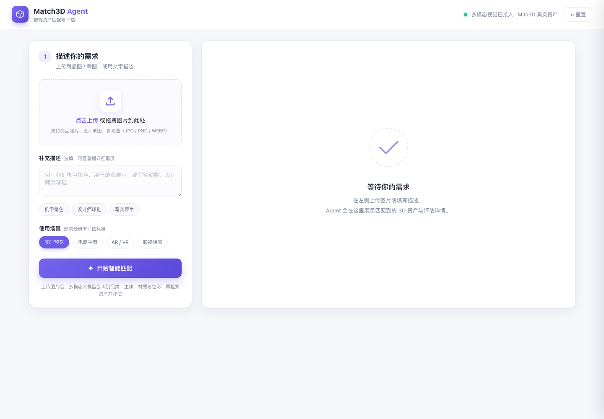
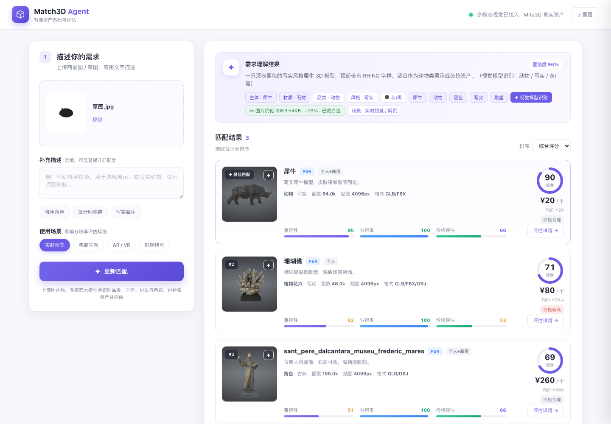
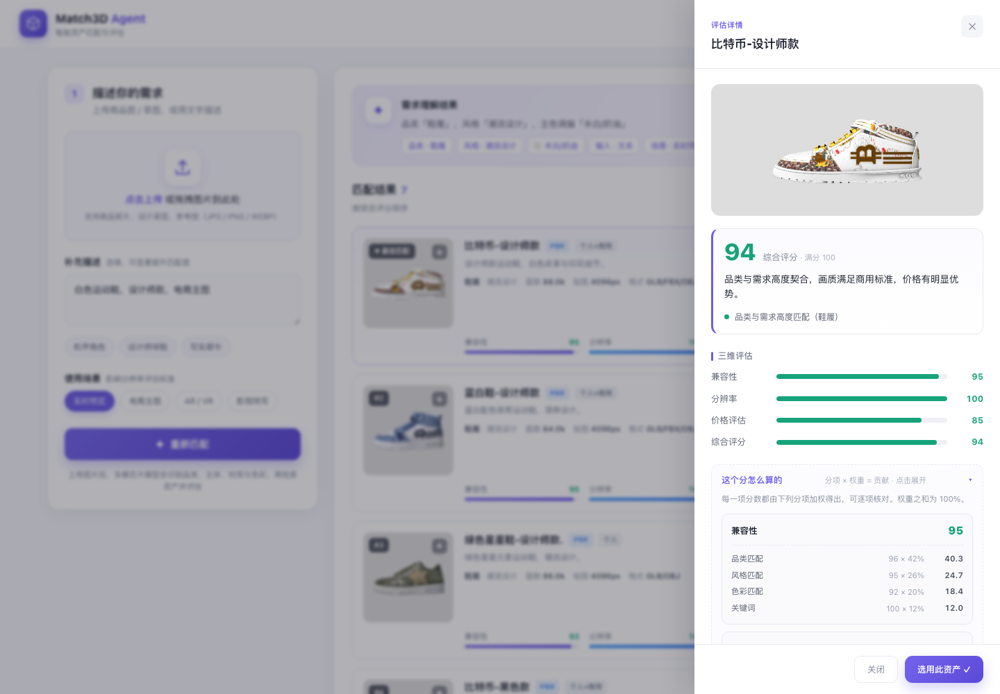

让买家上传一张图，
就找到平台里最合适的 3D 资产
一个面向 3D 资产交易场景的智能匹配 Agent：理解文字、商品图甚至手绘草图，自动检索资产库，并从兼容性、画质、价格三个维度给出可解释的评估与"买哪个"的决策结论。
买家不缺选择，缺的是"帮我选出来"
3D 资产平台的买家往往只有一张参考图或一个模糊想法，却要在大量模型里逐个比对风格、面数、授权和价格。这个项目的目标，是把"找与比"的过程，收敛成一句话结论。
真实痛点
描述说不清、图搜不到、参数看不懂、价格比不动——买家难以判断"这个资产能不能用、值不值"。而平台自有资产数据，也没有被变成可检索的智能体验。
产品思路
多模态理解需求 → 相关性过滤检索 → 规则化可解释评分 → 渐进披露评估 → 并排对比给出决策摘要，全程把结论摆在最前面、把证据放在需要时展开。
从"给结果"到"给结论"
六项能力中有三项是刻意的产品取舍：渐进披露、决策摘要、图片预压缩——它们不增加功能数量，而是决定用户是否真的用得起来。
多模态需求理解
文字与图片双输入；视觉模型识别品类、主体、材质、主色，与文字描述融合，展示可核对的理解标签与置信度，失败时降级本地解析。
相关性过滤检索
按具体名词、品类与风格建立优先级，完全不相干的资产不进入结果，避免"搜耳机出音箱"这类破坏信任的匹配。
可解释评分
兼容性 = 品类42% + 风格26% + 色彩20% + 关键词12%；综合分 = 兼容性46% + 分辨率30% + 价格24%，逐项可展开核对。
渐进披露评估 产品设计
首屏只给一句话结论与一正一负两条提醒；完整归因收进折叠区。普通买家看结论，专业买家可深挖，不把可解释性变成强制阅读。
并排对比与决策摘要 产品设计
最多 3 个资产同屏对比，自动推荐最优项并说明理由；平局维度灰显、授权受限一票否决，直接回答"买哪个"而非让用户自己算。
图片预压缩与成本意识 工程优化
上传草图自动裁白边、缩放到 1024px、JPEG 压缩，体积降约 79% 而识别效果不变；单张草图约 1.5k token，一次匹配成本不足一分钱。
真实数据 + 诚实边界
价格、分类、体积、格式、热度取自平台公开接口；面数、贴图、PBR 等未公开项明确标注为演示估算，不冒充真实数据。
响应式与离线自足
窄至 440px 的面板适配；图片 Base64 内联、资产数据离线快照，接口变更或下线也能完整演示。
三步，从需求到决策
关键界面实测截图
以下截图均来自当前可运行原型，非设计稿。






轻量实现，重点在产品设计
前端原型用原生 HTML / CSS / JavaScript 实现，无构建依赖，可直接离线运行；视觉理解接入多模态大模型，失败时自动降级到本地图像主色与文本解析。关键取舍是把工程成本与用户体验一起算：草图预压缩降低 token，同时不牺牲识别效果。
对数据来源保持诚实
演示估算：多边形面数、贴图分辨率、PBR、LOD、市场均价基准与评分，因平台未公开，均为演示用途的估算值，界面中以"估算"徽标明确区分。
原型所用资产数据与图片已做离线快照，即使接口变更或下线，也可完整演示。